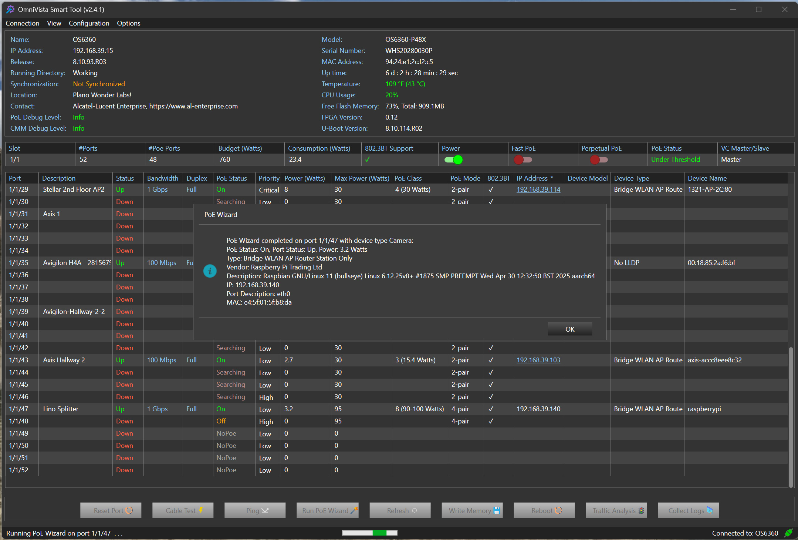

bp-smart-tool-sheet

R（何时用）
- OT/IoT 环境（工厂、交通、智能楼宇、水电、监狱/赌场/银行等）现场云不可达或受限，装维人员非网络专业
- 摄像机/传感器/门禁等设备密集型网络的 PoE 问题频发，需 60 秒级诊断修复
- 装维外包、现场人员流动大、排障依赖 IT 升级导致效率低
- 需要免 CLI、免云面板的独立现场工具；或需保留人工确认的 PoE 断电重启（高保障合规场景）
I（核心理念）
OmniVista Smart Tool（OST）是专为现场技术员打造的独立（standalone）、不依赖云的现场工具（P36，<<
A1（选型/决策要点）
- 先问使用者在哪、是谁：OT 现场装维外包人员 → OST；IT 网络团队日常运维 → OmniVista 平台 + Network Advisor（F4）
- 问云连接：现场云受限/无云 → OST 是少数可选项（cloud-independent）（<<
>>） - 问故障类型：多为 PoE/布线类 → PoE Wizard + TDR 直接对症（<<
>>） - 高保障市场（监狱、赌场、银行）要求操作留痕 → 一键 PoE Power Cycle 保留人工在环（<<
>>） - 首装场景 → Lightning Config 向导保证首次安装成功率（<<
>>）
A2（规格细节速查表）
| 能力 | 具体内容 | 页码 |
|---|---|---|
| 形态 | 独立现场工具，不依赖云（standalone, cloud-independent） | << |
| PoE Wizard | 60 秒内诊断并修复常见 PoE 问题，大幅缩短部署与培训时间 | << |
| PoE Power Cycle | 一键 PoE 断电重启摄像机/PoE 设备，免跑现场；保留人工在环以满足高保障市场（监狱/赌场/银行）问责要求 | << |
| TDR 线缆测试 | 以太网线缆健康测试（时域反射） | << |
| 端口发现与电力可视 | 按端口设备发现与供电可视（LLDP） | << |
| 配置向导 | 安全配置向导快速上手；安装全程无 CLI 依赖 | << |
| Lightning Config | OmniSwitch 首装配置向导，保障首次安装成功 | << |
| 效率指标 | 90%+ 摄像机问题更快解决；减少 truck rolls（跑现场次数） | << |
| 端口安全 | 端口锁定到摄像机，防未授权变更 | << |
| 团队赋能 | 视频/OT 运维人员可做一线排障，释放 IT 做高价值工作 | << |
典型适用环境（<<>>）
- 物理安防（VMS）
- 交通与 ITS（智能交通系统）
- 工业与制造业
- 智能楼宇与 BAS（楼宇自动化）
- 水电、园区与关键基础设施
OT 部署五大痛点（OST 对症，<<>>）
- 安装由非网络专业人员执行
- 现场与运维人员流动率高
- 排障耗时且需 IT 升级
- 设备密集网络（摄像机/传感器/门禁）PoE 问题频发
- OT 环境云连接受限或被禁
E（适用场景案例）
- 工厂/交通现场云不可达、装维外包非网络专业 → OST 而非 Cirrus（C8，<<
>>） - 监狱/赌场/银行高保障场景 → 一键 PoE Power Cycle 保留人工确认，满足问责（<<
>>） - 摄像机大规模部署首装 → Lightning Config 向导 + PoE Wizard，减少培训与部署时间（<<
>>/<< >>） - 布线老化排查 → TDR 线缆健康测试定位物理层故障（<<
>>）
B（限制与订购坑）
- 定位是现场工具，不含集中网管/监控面板——不能替代 OmniVista 平台（F4：多工具互补）
- 彩页未列 SKU 号、许可与平台要求（支持的交换机型号/版本）——订购与技术前提待确认，需另查 ALE 报价与兼容清单
- 面向 OmniSwitch 生态（Lightning Config 为 OmniSwitch 向导）；第三方交换机不在覆盖内（<<
>>，推断自上下文）
来源：bp-nms-brochures · omnivista-smart-tool-solution-sheet-en.pdf，p22-23
仅供内部学习使用 · 教材版权归 ALE Training Services 所有